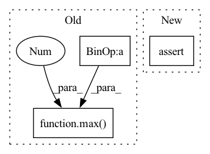

Pattern ID :26199
Before Change
def __getitem__(self, idx):
// get index data
data = self.data.iloc[self.data_index.index_start.iloc[idx] : self.data_index.index_end.iloc[idx] + 1].copy()
// todo: handle missings -> fill them up with strategy
// determine data window
sequence_length = len(data)
max_prediction_length = self.max_prediction_length
if self.randomize_length is not None:
// modify sequence length
sequence_length_prob, encode_length_probability = Beta(*self.randomize_length).sample(torch.Size([2]))
sequence_length = int(max(1, Binomial(sequence_length, sequence_length_prob).sample()))
max_prediction_length = int(max(1, Binomial(max_prediction_length, encode_length_probability).sample()))
if sequence_length < len(data):
data = data.iloc[-sequence_length:] // select subset of sequence
encode_length = min(max(0 , sequence_length - max_prediction_length) , self.max_encode_length)
decode_length = sequence_length - encode_length
// extract dataAfter Change
encode_length = new_encode_length
decode_length = new_decode_length
assert decode_length > 0
assert encode_length >= 0
assert data.iloc[-1]["__time_idx__"] - self.min_prediction_idx + 1 >= decode_length
In pattern: SUPERPATTERN
Frequency: 4
Non-data size: 3
Instances Fragment ID: 78912212
Project Name: jdb78/pytorch-forecasting
Commit Name: 79cfec0818dbe78d8773534e6ce8f5fd578c3c3a
Time: 2020-06-22
Author: beitner.jan@bcg.com
File Name: temporal_fusion_transformer_pytorch/data.py
M Class Name: TimeSeriesDataSet
N Class Name: TimeSeriesDataSet
M Method Name: __getitem__(2)
N Method Name: __getitem__(2)
M Parent Class: Dataset
N Parent Class: Dataset
M File Name: temporal_fusion_transformer_pytorch/data.py
N File Name: temporal_fusion_transformer_pytorch/data.py
M Start Line: 149
M End Line: 164
N Start Line: 186
N End Line: 220
Before Change
def lr_lambda(self, current_step: int) -> int:
if current_step < self.num_warmup_steps:
return float(current_step) / float(max(1, self.num_warmup_steps))
return max(
0.0 , float(self.num_training_steps - current_step) / float(max(1, self.num_training_steps - self.num_warmup_steps))
)
def get_lr(self):
if not self._get_lr_called_within_step:
warnings.warn("To get the last learning rate computed by the scheduler, "After Change
def lr_lambda(self, current_step: int) -> int:
assert current_step >= self.beg_step
assert current_step <= self.num_training_steps
relative_curr_step = current_step - self.beg_step
relative_num_training_steps = self.num_training_steps - self.beg_step Fragment ID: 78912214
Project Name: ikernels/transformers-lightning
Commit Name: 090b707330b9253aa4c9f71cf1830a7ed910977f
Time: 2020-12-23
Author: matteogabburo@gmail.com
File Name: transformers_lightning/schedulers/linear_scheduler_with_warmup.py
M Class Name: LinearSchedulerWithWarmup
N Class Name: LinearSchedulerWithWarmup
M Method Name: lr_lambda(2)
N Method Name: lr_lambda(2)
M Parent Class: _LRScheduler
N Parent Class: _LRScheduler
M File Name: transformers_lightning/schedulers/linear_scheduler_with_warmup.py
N File Name: transformers_lightning/schedulers/linear_scheduler_with_warmup.py
M Start Line: 47
M End Line: 51
N Start Line: 50
N End Line: 60
Before Change
assert mode in ("down", "same", "up", "out")
conv_conf = conv_conf[mode]
branch_channels = max( max(in_channels, out_channels) // bottleneck_divisor, 1 )
self.activation = instantiate(activation)
self.bias1a, self.bias1b, self.bias2a, self.bias2b, self.bias3a, self.bias3b, self.bias4 = (After Change
conv_conf = conv_conf[mode]
max_channels = max(in_channels, out_channels)
assert isclose(max_channels % bottleneck_divisor, 0), (
f"residual channels: {max_channels} not divisible by bottleneck divisor: {bottleneck_divisor}!"
)
branch_channels = max(round(max_channels / bottleneck_divisor), 1) Fragment ID: 78912199
Project Name: sara-nl/2d-vq-ae-2
Commit Name: ce0eca747fa8b5a1b49e3b22a958a5c6d059ec66
Time: 2021-10-19
Author: robertjan.schlimbach@gmail.com
File Name: vq_ae/layers/conv_block.py
M Class Name: PreActFixupResBlock
N Class Name: PreActFixupResBlock
M Method Name: __init__(7)
N Method Name: __init__(7)
M Parent Class: nn.Module
N Parent Class: nn.Module
M File Name: vq_ae/layers/conv_block.py
N File Name: vq_ae/layers/conv_block.py
M Start Line: 142
M End Line: 142
N Start Line: 143
N End Line: 147
Before Change
ratio = estimated_sources_amplitude / estimated_sources_amplitude.sum(dim=0)
estimated_sources = ratio * mixture
norm = max(1 , torch.abs(mixture).max() / 10)
mixture, estimated_sources = mixture / norm, estimated_sources / norm
estimated_sources = update_em(mixture, estimated_sources, iterations, eps=eps)
estimated_sources = norm * estimated_sources
After Change
elif n_dims != 3:
raise ValueError("mixture.dim() is expected 3 or 4, but given {}.".format(mixture.dim()))
assert estimated_amplitude.dim() == 4, "estimated_amplitude.dim() is expected 4, but given {}.".format(estimated_amplitude.dim())
device = mixture.device
dtype = mixture.dtype Fragment ID: 78912216
Project Name: tky823/dnn-based_source_separation
Commit Name: 11a2e82888f76547df72eff58c6a592e3473e65c
Time: 2021-08-20
Author: 40362510+tky823@users.noreply.github.com
File Name: egs/musdb18/d3net/src/adhoc_driver.py
M Class Name: AnonimousClass
N Class Name: AnonimousClass
M Method Name: apply_multichannel_wiener_filter(4)
N Method Name: apply_multichannel_wiener_filter(5)
M Parent Class:
N Parent Class:
M File Name: egs/musdb18/d3net/src/adhoc_driver.py
N File Name: egs/musdb18/d3net/src/adhoc_driver.py
M Start Line: 383
M End Line: 401
N Start Line: 397
N End Line: 413